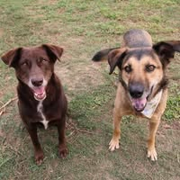

🐾 我的故事
到目前為止，我已經救援超過數千隻浪浪，雖然辛苦，但每次牠們平安落地，都讓我覺得這一切值得。
我希望透過這個平台，讓更多人了解流浪動物的處境，也希望能募集到更多資源，幫助牠們找到溫暖的家。
在這30年來我不斷在外隨緣餵養抓紮救援了數千隻浪狗孩們，
都已經送養到新家，
雖然辛苦，但每次牠們找到歸處，都讓我覺得這一切值得❤️。
到現在為止還有15隻老狗自行安置養老中，
15年前同時開始大量餵養救援浪貓至今已幫300多浪貓孩到新家；
另因抓紮浪貓而順帶救援醫療後回來安置還在找家中的成貓已有30隻😱
👉同時捕到的一窩窩幼貓約200個小貓已全部送醫療後也到幸福家了🧚♀️
👉目前外面餵養約50隻浪貓（可紮的都已紮）
沒抓紮到的也持續抓紮中🫡
貓屋每月的租金+水電約2萬元外+數萬元的醫療費+買飼料罐頭的費用🥲
負擔超級重🥲
請各位好友多多踴躍購買義賣的當季新鮮水果、新鮮水果乾、咖啡、手作餅乾🥹
義賣的所有食品
（利潤全部使用於購買飼料罐頭）🧚♀️
👉水果每週都有採收🎉
當天採收寄出👍
👉水果乾每週都有製作🎉